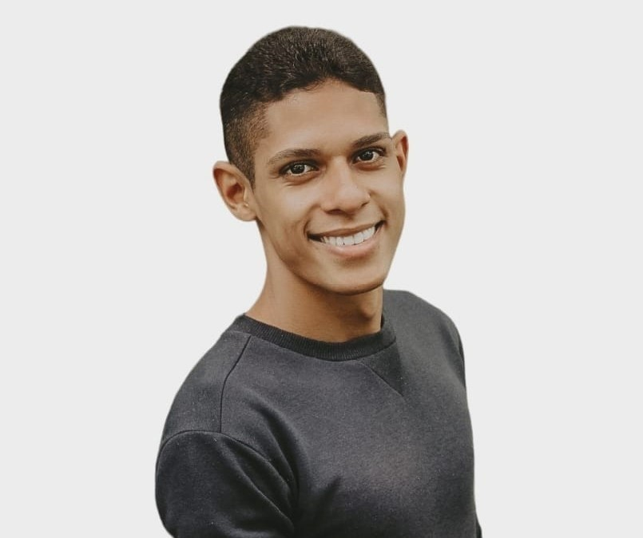

Com uma base inicial em Administração, adquiri habilidades valiosas em comunicação, trabalho em equipe e organização. No entanto, em 2022, decidi mudar para o campo da Tecnologia da Informação, onde descobri uma paixão. Atualmente, sou estudante de Desenvolvimento de Software, cursando Análise e Desenvolvimento de Sistemas na Faculdade Senac Pernambuco, e especializando-me como Desenvolvedor Frontend pelo programa Potência Tech do iFood. Em 2023, concluí meu Curso Técnico em Desenvolvimento de Sistemas e o Programa ONE, onde obtive conhecimentos essenciais em HTML, CSS, JavaScript e React, além de habilidades em GIT, GitHub e Metodologias Ágeis. Como estagiário na Aceleradora Ágil, estou ganhando experiência prática em desenvolvimento ágil de produtos, aprimorando minhas habilidades técnicas e interpessoais. Meu objetivo é continuar crescendo na área de desenvolvimento de software, contribuindo para projetos significativos que impactem positivamente a vida das pessoas.
Instagram GitHub 